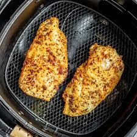

Air Fryer Chicken Recipe

Description
Easy Air fryer chicken
This should go great with the brocolli and cheese
Ingredients
- 2 Large Chicken breasts
- 1 TBSP olive oil
- 1/4 Cup bread crumbs
- Salt,pepper, garlic/onion powder, cayenne
Steps
- Heat Air Fryer to 390
- Slice Chicken in half horizontally to make 2 thin breasts
- Brush each side with olive oil
- Stir together breading and dredge the chicken thoroghly
- Shake off excess and okace in air fryer 2 at a time
- Cook for 4 mins, flip, then 2 more mins